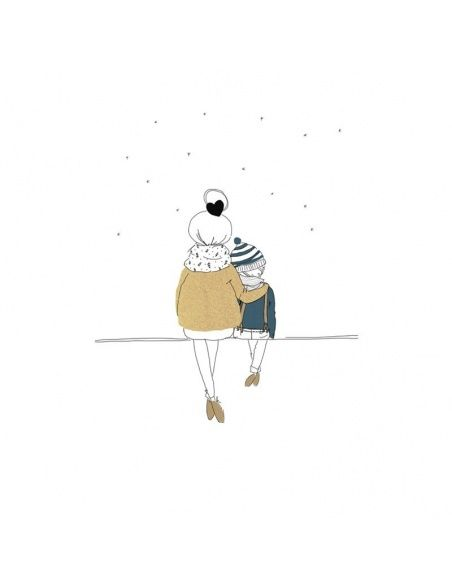

Once upon a time, a little boy looked envious how his mum was paying more attention to his younger sister. Instead of breaking something or shouting, he took pencil and paper, and started a poem.
There were some attemps to create and run a blog among various poets, but on one way or another, participation decreased and thus its content and posting frequency. I did not know how to inspire my friends to continue posting their poems.
However, I learnt, and some years later I have come with a better idea and, more important, a better implementation of it.
Just compare this one...
... to this one:
Estrechos de Miras is a group compound of around 20 poets whose styles and senses are quite heterogeneous, being them passionate of the same thing: poetry.
Furthermore, we collaborate with other artists such as photographers or painters who illustrate our poems, and we organize events in which poetry and music share place together.
The group was founded on the values of sharing and high-quality, and its purpose, its WHY is to create a community of artists.
Actually, I am participating in the making of a space videogame as its scripter.